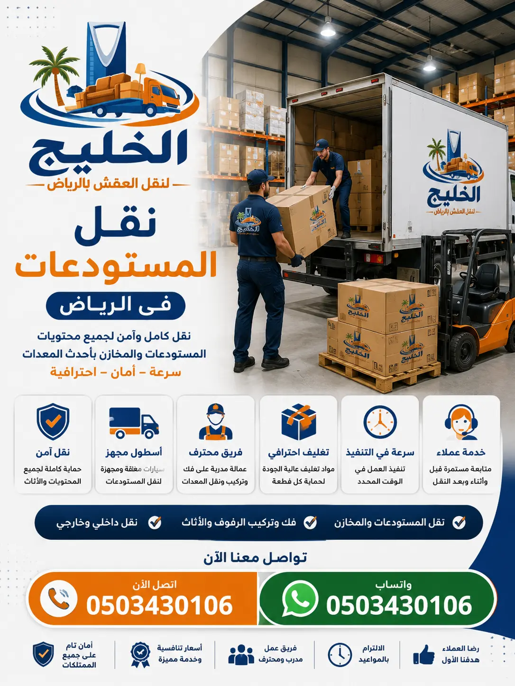

نقل مستودعات بالرياض – نقل عفش مستودعات بأسعار تبدأ من 1500 ريال
نقدم أفضل خدمة نقل مستودعات بالرياض بأسعار تنافسية تبدأ من 1500 ريال. شركة نقل عفش الرياض التي تثق بها كبرى الشركات والمؤسسات. سيارات نقل مستودعات مجهزة وفريق محترف لضمان سلامة بضائعك ومعداتك.
أفضل شركة نقل مستودعات بالرياض – نقل آمن واحترافي لبضائعك
إذا كنت تبحث عن شركة نقل مستودعات بالرياض موثوقة ومتخصصة في نقل البضائع والمعدات الثقيلة، فإن شركة الخليج لنقل العفش هي خيارك الأمثل. نحن نقدم خدمات نقل عفش المستودعات والمخازن والمراكز اللوجستية بأعلى مستويات الاحترافية والتميز. سواء كنت بحاجة إلى نقل مستودع صغير أو مستودع صناعي ضخم، فإن لدينا الإمكانيات والخبرات اللازمة. تبدأ أسعار نقل المستودعات بالرياض من 1500 ريال فقط، وتختلف حسب حجم المستودع وكمية البضائع والمعدات والمسافة. نحن نخدم جميع أحياء الرياض من شمالها إلى جنوبها وشرقها إلى غربها. أفضل شركات نقل العفش بالرياض تقدم لك خدمة متكاملة تشمل فك وتركيب الأرفف، تغليف البضائع الحساسة، والنقل الآمن. فريقنا المدرب يصل إلى موقع مستودعك في الوقت المحدد، ويقوم بتحميل وتفريغ البضائع بعناية فائقة باستخدام أحدث المعدات. لا تتردد في الاتصال بنا للحصول على عرض سعر فوري ومجاني. نقل العفش بالرياض هو تخصصنا، ونفخر بتقديم خدمة متميزة تناسب جميع القطاعات.
تعتبر سيارات نقل المستودعات بالرياض التي نوفرها من أكبر وأحدث السيارات المجهزة بأنظمة تثبيت متطورة، وأحزمة ربط قوية لمنع تحرك البضائع والمعدات أثناء السير. كما نحرص على أن تكون سياراتنا نظيفة ومعقمة قبل كل عملية نقل. أرخص شركة نقل عفش بالرياض تقدم أعلى مستويات الجودة لعملائها من الشركات والمؤسسات. نحن ندرك أن نقل المستودع يعني راحة البال واستمرارية الأعمال، لذا نوفر لكم خدمة سريعة ومنظمة تبدأ من التغليف الاحترافي باستخدام أفضل مواد تغليف الأثاث وصولاً إلى إعادة التركيب في المقر الجديد. اتصل بنا اليوم على 0503430106 واحصل على خصم خاص للشركات والمؤسسات.

شركة نقل مستودعات بالرياض – حلول متكاملة للشركات والمؤسسات
شركة نقل مستودعات بالرياض التي تبحث عنها ليست مجرد شركة تنقل البضائع، بل هي شريك استراتيجي في نجاح انتقال عملك. في شركة الخليج، ندرك أن نقل المستودع يتطلب تخطيطاً دقيقاً وفريقاً محترفاً يمكنه التعامل مع جميع التحديات التي قد تطرأ. نحن نقدم حلولاً شاملة لنقل المستودعات والمخازن والمراكز اللوجستية في الرياض، سواء كنت تنقل مستودعاً صغيراً أو مركزاً توزيعياً ضخماً. نحرص على تقديم خدمة متميزة تبدأ من التقييم المجاني للبضائع والمعدات وانتهاءً بإعادة ترتيبها في الموقع الجديد. فريقنا من الفنيين والعمالة المدربة لديه القدرة على فك وتركيب جميع أنواع الأرفف والتجهيزات بأسلوب احترافي يحافظ على سلامتها. نستخدم أحدث أدوات الفك والتركيب، ونعتمد على أساليب متطورة في التغليف باستخدام أفضل الخامات مثل الفوم والاسترتش والكراتين السميكة، لضمان حماية البضائع الحساسة والمعدات الإلكترونية من الخدوش والصدمات أثناء النقل. كما نتميز بأسطول حديث من دينات وشاحنات نقل الأثاث بالرياض المجهزة بأنظمة تثبيت حديثة ورافعات هيدروليكية تسهل عملية التحميل والتنزيل، مما يضمن وصول بضائعك إلى مستودعك الجديد بكل أمان وسلامة.
اختيار شركة متخصصة مثل الخليج لنقل المستودعات يضمن لك تجربة نقل خالية من التوتر، حيث نتعامل مع كل قطعة من بضائعك وكأنها قطعة فنية ثمينة، ونعمل على تقديم خدمة تتجاوز توقعاتك بأقل التكاليف الممكنة وبأعلى مستويات الجودة. الفرق بين شركات النقل المحترفة والعادية واضح، ونحن نضع أنفسنا دائماً في فئة المحترفين. نقدم أيضاً خدمات فك وتركيب الأثاث لجميع أنواع الأرفف والتجهيزات، ودينا نقل عفش بالرياض للشركات التي تحتاج إلى نقل المعدات والبضائع. أفضل شركات نقل العفش بالرياض تضع شركتنا في المرتبة الأولى بفضل خدماتنا المتكاملة وأسعارنا التنافسية. ثقتكم هي هدفنا، ورضاكم هو غايتنا.
أفضل شركة نقل مستودعات بالرياض – لماذا نحن الخيار الأول؟
عند البحث عن أفضل شركة نقل مستودعات بالرياض، تبرز شركة الخليج كخيار مثالي يلبي جميع احتياجات الشركات والمؤسسات. فما الذي يجعل شركة نقل مستودعات هي الأفضل؟ إنه مزيج من الخبرة الطويلة، والكفاءة العالية، والأسعار التنافسية، والالتزام بالجودة. نحن في الخليج نتفوق على منافسينا من خلال تقديم خدمات متكاملة تشمل كل ما تحتاجه من فك وتركيب وتغليف ونقل وتخزين البضائع والمعدات، كل ذلك تحت سقف واحد وبرأس مال بشري مدرب على أعلى مستوى. أفضلية شركتنا تأتي من كوننا نمتلك فريقاً متخصصاً يمتلك المهارات اللازمة للتعامل مع جميع أنواع البضائع والمعدات، سواء كانت بضائع خفيفة وحساسة أو معدات ثقيلة وضخمة. نحن نضمن لك نقل بضائع ومعدات مستودعك دون أي أضرار، وذلك بفضل استخدامنا لأحدث تقنيات التغليف والحماية، بما في ذلك البطاطين المخصصة، والاسترتش الشفاف، والفوم عالي الكثافة، والكراتين المقواة. بالإضافة إلى ذلك، نقدم أسعاراً تنافسية تجعلنا الخيار الأول للعديد من الشركات، حيث نحرص على تقديم عروض وخصومات تناسب جميع الميزانيات، مع الحفاظ على جودة الخدمة المقدمة.
خدمة العملاء لدينا متاحة على مدار الساعة لتلقي استفساراتكم وحجوزاتكم، وفريقنا جاهز للوصول إليكم في أي وقت لمعاينة المستودع وتقديم عرض سعر فوري ودقيق. ثقة عملائنا هي دليلنا على التميز، لذا نحرص دائماً على بناء علاقات طويلة الأمد مبنية على المصداقية والشفافية والالتزام بكافة معايير السلامة والأمان في عمليات النقل. الفرق بين شركات النقل المحترفة والعادية واضح، ونحن نضع أنفسنا دائماً في فئة المحترفين. نقدم أيضاً خدمات فك وتركيب الأثاث لجميع أنواع الأرفف والتجهيزات، ودينا نقل عفش بالرياض للشركات التي تحتاج إلى نقل المعدات والبضائع. أفضل شركة نقل عفش الرياض تنتظر اتصالك لخدمة مستودعك. اتصل بنا اليوم على 0503430106.
خدمات نقل المستودعات والمخازن بالرياض – حزمة متكاملة
خدمة نقل مستودعات بالرياض التي نقدمها ليست مجرد توفير سيارة نقل، بل حزمة متكاملة تشمل فك وتركيب الأرفف والتجهيزات، تغليف البضائع والمعدات، ونقل الأغراض بأمان. يمكنك الاعتماد علينا لنقل جميع أنواع البضائع والمعدات: الأرفف المعدنية، البضائع المخزنة، الأجهزة الإلكترونية، المعدات الثقيلة، والمواد الغذائية. نتعامل مع البضائع الحساسة مثل الأدوية والأجهزة الطبية باستخدام صناديق مخصصة مزودة بطبقات عازلة للحرارة والرطوبة. نقل أثاث بالرياض هي خدمة متخصصة نقدمها للمستودعات والشركات. بالإضافة إلى ذلك، نقدم خدمات تخزين الأثاث في الرياض للشركات التي تحتاج إلى تخزين مؤقت لبضائعها أثناء فترة الانتقال. شركات نقل العفش بالرياض تضعنا في المرتبة الأولى بفضل جودة خدماتنا الشاملة. نحن نقدم أيضاً خدمة أفضل طرق تغليف الأثاث لضمان وصول جميع بضائعك بحالة ممتازة.
أنواع البضائع والمعدات التي ننقلها للمستودعات بالرياض
نحن في شركة الخليج لنقل العفش نقدم خدمات نقل مستودعات بالرياض لجميع أنواع البضائع والمعدات. نمتلك خبرة في نقل جميع أنواع المخزون: أثاث، أجهزة إلكترونية، مواد غذائية، أدوية، معدات صناعية، ومواد بناء. نتعامل مع البضائع الحساسة مثل الأجهزة الطبية والإلكترونيات باستخدام صناديق مخصصة مزودة بطبقات عازلة للصدمات والصدمات الحرارية. تغليف البضائع بالرياض للمستودعات يتم بأعلى المعايير، مع فريق فني متخصص في فك وتركيب المعدات وإعادة تنظيم المستودع الجديد.
خطوات نقل المستودعات بالرياض مع شركة الخليج
عملية نقل مستودعات بالرياض مع شركة الخليج منظمة على مراحل لضمان نقل سلس وآمن. الخطوة الأولى: الاتصال بنا على 0503430106 أو عبر الواتساب لتحديد موعد المعاينة المجانية. الخطوة الثانية: يزور فريقنا مستودعك لتقييم كمية البضائع والمعدات وتحديد السيارة المناسبة وعدد العمال. الخطوة الثالثة: نرسل عرض سعر نهائي وشفاف. الخطوة الرابعة: نقوم بفك الأرفف والتجهيزات وتغليف البضائع باستخدام أفضل مواد التغليف. الخطوة الخامسة: تحميل البضائع والمعدات في السيارة وتثبيتها بشكل آمن. الخطوة السادسة: النقل إلى المستودع الجديد، ثم التفريغ وإعادة التركيب وتنظيم البضائع. هذه الخطوات تجعلنا أفضل شركات نقل العفش بالرياض لقطاع المستودعات والخدمات اللوجستية.
أحياء الرياض التي نخدمها لنقل المستودعات والمخازن
نحن نخدم جميع أحياء الرياض وضواحيها بأسطولنا من سيارات نقل المستودعات بالرياض. تشمل قائمة الأحياء التي نغطيها: حي العليا (المركز التجاري)، حي الخليج، حي النرجس، حي الياسمين، حي الروضة، حي النسيم، حي الربيع، حي القيروان، حي حطين، حي الملقا، حي الصحافة، حي العارض، حي إشبيلية، وحي الرمال. كما نخدم المناطق الصناعية واللوجستية والمجمعات الحكومية.
أسعار نقل المستودعات والمخازن بالرياض وعوامل التسعير
| نوع الخدمة | السعر التقديري (ريال) | ملاحظات |
|---|---|---|
| مستودع صغير (أقل من 100 م²) | 1500 - 3000 | سعر ثابت داخل الرياض |
| مستودع متوسط (100-500 م²) | 3500 - 7000 | يشمل عمالة للتحميل والتفريغ |
| مستودع كبير (500-2000 م²) | 8000 - 20000 | حسب كمية البضائع والمعدات والسيارات |
| مستودع صناعي ضخم (2000+ م²) | 25000 - 50000+ | خدمات خاصة وفريق مميز وشاحنات متعددة |
| فك وتركيب أرفف وتجهيزات | 500 - 2000 | فريق نجارة وفنيين متخصصين |
| تغليف بضائع حساسة | 300 - 1000 | مواد عازلة ومضادة للصدمات |
| تخزين بضائع شهري | 500 - 2000 | مستودعات آمنة ومكيفة بمراقبة 24 ساعة |
تختلف أسعار نقل المستودعات بالرياض حسب عدة عوامل: مساحة المستودع وكمية البضائع والمعدات، المسافة بين موقعي النقل، عدد الأدوار، والخدمات الإضافية مثل فك وتركيب الأرفف أو تغليف البضائع الحساسة. نحن نقدم أفضل الأسعار التنافسية دون المساس بالجودة. تعرف على تفاصيل أسعار نقل العفش في الرياض من خلال موقعنا. اتصل بنا لتحصل على عرض سعر دقيق ومجاني لنقل مستودعك.
آراء عملائنا في خدمة نقل المستودعات بالرياض
نفخر بثقة عملائنا من الشركات والمؤسسات الذين جربوا خدماتنا في نقل مستودعات بالرياض. إليكم بعض آرائهم:
"أفضل شركة نقل مستودعات بالرياض. تعاملت معهم لنقل مستودع شركتي من حي العليا إلى حي النرجس. كان الفريق محترفاً جداً، والبضائع والمعدات وصلت سليمة دون أي خدش. أنصح جميع الشركات بالتعامل معهم."
— المهندس خالد
"نقلت مستودعي من حي الروضة إلى حي القيروان مع شركة الخليج. الأسعار منافسة جداً، والعمالة مدربة على فك وتركيب الأرفف. شكراً لكم على الخدمة الممتازة."
— الأستاذة نورة
"تعاملت مع أكثر من شركة نقل، لكن شركة الخليج كانت الأفضل في نقل مستودعي بالرياض. الالتزام بالمواعيد، النظافة، وسرعة الإنجاز. سأستمر في التعامل معهم."
— الدكتور فيصل
"خدمة نقل مستودعات بالرياض متميزة. قاموا بنقل جميع بضائع ومعدات مستودعي من حي العليا إلى حي النرجس. البضائع وصلت بحالة ممتازة. شكراً للفريق المحترف."
— الأستاذ سامي
لماذا تختار شركتنا لنقل المستودعات بالرياض؟
هناك عدة أسباب تجعل شركة الخليج لنقل العفش هي الخيار الأفضل لخدمة نقل مستودعات بالرياض. أولاً: خبرة تمتد لأكثر من 15 عاماً في نقل البضائع والمعدات للشركات والمؤسسات. ثانياً: أسطول حديث من السيارات المجهزة بأنظمة تثبيت متطورة لحماية البضائع الحساسة. ثالثاً: فريق مدرب على التعامل مع جميع أنواع البضائع والمعدات. رابعاً: أسعار تنافسية تبدأ من 1500 ريال للمستودع الصغير. خامساً: ضمان شامل على سلامة البضائع والمعدات. سادساً: خدمة 24 ساعة طوال أيام الأسبوع مع إمكانية النقل في أي وقت. سابعاً: تغطية جميع أحياء الرياض التجارية والصناعية.
الأسئلة الشائعة عن نقل مستودعات بالرياض
تبدأ أسعار نقل المستودعات بالرياض من 1500 ريال للمستودع الصغير، وتصل إلى 50000 ريال للمستودعات الصناعية الضخمة. تفاصيل الأسعار
نعم، لدينا فريق متخصص في فك وتركيب الأرفف والتجهيزات وجميع أنواع المعدات المستخدمة في المستودعات.
نستخدم تغليف احترافي للبضائع الحساسة بصناديق مزدوجة ومواد عازلة للحرارة والرطوبة، ونثبتها بأحزمة خاصة داخل السيارة.
نعم، نوفر دينا نقل عفش بالرياض ورافعات هيدروليكية مجهزة لنقل المعدات والأرفف الثقيلة بأمان.
نعم، نوفر تخزين البضائع في الرياض بمستودعات مجهزة بأحدث أنظمة الأمان وكاميرات مراقبة.
مستودع متوسط (100-500 م²) يستغرق من 2 إلى 4 أيام حسب كمية البضائع والمعدات والمسافة.
جميع عمالنا مدربون على نقل البضائع والمعدات الثقيلة ولديهم خبرة سنوات في هذا المجال.
نعم، نخدم جميع المناطق الصناعية واللوجستية بما فيها العليا، الخليج، النرجس، وغيرها. دليل أحياء الرياض
نقدم ضماناً شاملاً على سلامة البضائع والمعدات من الكسر والتلف أثناء النقل.
نعم، نوفر خدمة نقل المستودعات على مدار الساعة، بما في ذلك الليل وعطلات نهاية الأسبوع.
احجز خدمة نقل مستودعك بالرياض الآن
فريقنا جاهز لخدمتك على مدار الساعة. اتصل الآن وتمتع بعرض خاص للشركات على أول خدمة نقل.
اتصل بنا 0503430106